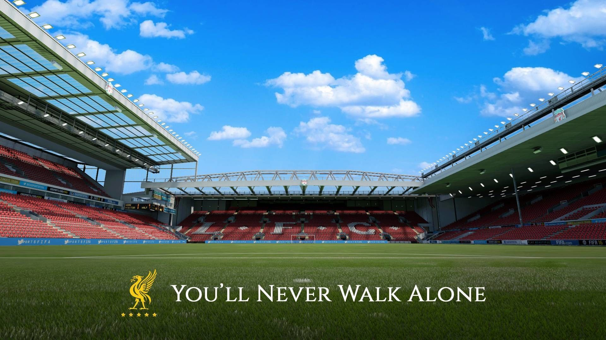
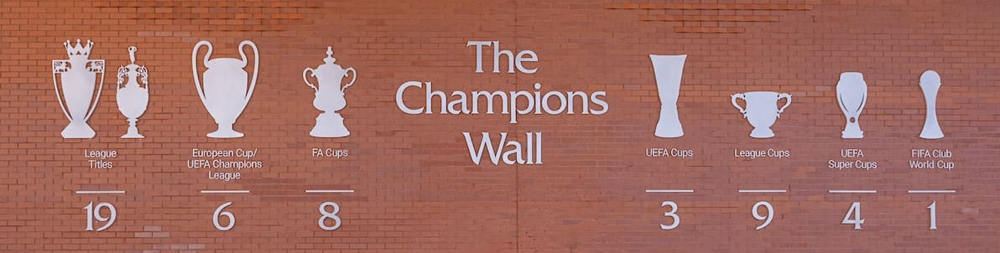

Deskripsi

Liverpool didirikan pada tahun 1892 dan bergabung dengan Football
League pada tahun berikutnya. Klub ini telah bermain di Stadion
Anfield sejak pembentukannya yang terletak sekitar 4,8 km dari pusat
kota Liverpool.
Periode paling sukses dalam sejarah Liverpool adalah pada tahun
1970-an dan 1980-an ketika Bill Shankly dan Bob Paisley memimpin
klub dengan sebelas gelar liga dan tujuh piala Eropa.
Prestasi

Liverpool adalah klub terbaik Inggris abad ke-20 menurut
International Federation of Football History and Statistics (IFFHS).
Untuk tingkat dunia, Liverpool berapa di urutan ke-7 sebegai klub
terbaik abad ke-21 setelah Barcelona, Manchester United, Arsenal,
Real Madrid, Inter Milan, dan Bayern München.
Kompetisi Domestik
Liverpool adalah klub dengan raihan total (57) Piala Kompetisi
Domestik. Total (19) Juara Liga Inggris dengan rincian (18) Divisi
Pertama Liga Inggris, (1) Liga Premier Inggris, (8) Piala FA, (9)
Piala Liga, (15) FA Community Shield, (4) Divisi kedua, (1)
Football League Super Cup, (1) Sheriff of London Charity Shield.
Kompetisi Eropa
Liverpool adalah klub dengan raihan total (13) Juara Kompetisi
Eropa, dengan rincian (6) Liga Champions UEFA, (3) Liga Eropa
UEFA, (4) Piala Super UEFA. (terbanyak dari klub inggris manapun)
Turnamen Dunia
Liverpool adalah klub dengan raihan total (1) Juara Piala Dunia,
dengan rincian (1) Piala Dunia Antarklub FIFA. (Liverpool pernah
tercatat 2 kali masuk final turnamen Piala Interkontinental tetapi
kalah di kedua final tersebut pada tahun 1981 oleh Flamengo dan
1984 oleh Independiente)